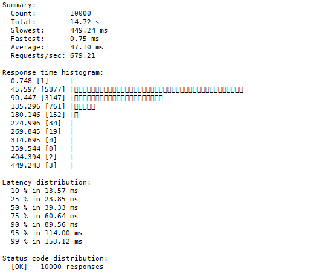

xbench是矩链的压测工具，支持和 Prometheus + Grafana 监控节点。 同时支持转账、存证、合约等相关压测场景，可以通过 grafana 实时看到节点状态。
1 环境搭建
1.1 监控环境搭建
Prometheus + Grafana 监控系统的流程参考监控环境搭建章节。结合可视化工具可以清楚的看到压测的过程，方便查看。
1.2 网络测试环境搭建
以三节点网络进行测试，其中可以再启动链的时候选择共识。下面介绍压测环境搭建：
- 下载xchain，并编译。
git clone https://github.com/superconsensus-chain/xuperchain.git
cd xuperchain
make
make testnet
2.修改配置
a. env.yaml
# Metric switch
metricSwitch: true
b. server.yaml （注意修改其他节点端口不同）
metricPort: 37201
c. xuper.json
# 去掉交易费用方便压测
nofee:true
4.启动网络
cd testnet/node1
bash control.sh start
cd ../node2
bash control.sh start
cd ../node3
bash control.sh start
2 xbench使用
2.1 准备压测环境
1.下载xbench,并编译
git clone https://github.com/xuperchain/xbench.git
cd xbench
make
- 准备测试资源。
xbench 在编译成功后，output 目录下会有 data/bank 目录，此目录下的 address 文件中的地址为 xbench 测试时需要的初始地址。
在 xuperchain 的 testnet/node1 目录下执行以下命令转账给 xbench 账户：
./bin/xchain-cli transfer --to dw3RjnTe47G4u6a6hHWCfEhtaDkgdYWTE --amount 1000000000000
#其中 dw3RjnTe47G4u6a6hHWCfEhtaDkgdYWTE 地址为 xbench 下 data/bank/address 地址。
2.2 transfer转账压测
转账压测，通过调用sdk生成交易数据
2.2.1 修改xbench 配置文件
# (conf/transfer.yaml)
# 压测配置
total: 500000 # 请求总量
concurrency: 100 # 并发量
# 压测case参数
tags:
benchmark: "transfer" # 压测类型
amount: "100000000" # 压测账户初始token数
# 压测节点
host: "127.0.0.1:37101"
2.2.2 xbench 启动命令
./bin/xbench --config=./conf/transfer.yaml
2.2.3 压测效果
结论：50万级有压力
a. 虚拟机配置
虚拟机Ubuntu20.04 4G 4核
b. 万级(20秒内)

c. 十万级（150秒内）

d. 请求量十万，并发数量1000，表现数据较好

2.3 transaction压测
转账压测，离线生成交易数据，没有进行 SelectUTXO
2.3.1 修改配置
# 文件路径conf/evidence
# 压测配置
total: 100000 # 请求总量
concurrency: 100 # 并发量
# 压测case参数
tags:
benchmark: "transaction" # 压测类型
amount: "100000000" # 压测账户初始token数
# 压测节点
host: "127.0.0.1:37101"
2.3.2 十万请求的压测数据
a. 请求总量十万，并发100

b. 请求十万，并发1000数据


2.4 counter合约压测
counter合约压测，调用sdk生成数据
2.4.1 修改配置
#conf/counter.yaml
# 压测配置
total: 100000 # 请求总量
concurrency: 100 # 并发量
# 压测case参数
tags:
benchmark: "contract" # 压测类型
amount: "100000000" # 压测账户初始token数
contract_account: "XC1234567890123456@xuper" # 合约账户
code_path: "./data/contract/counter.wasm" # 合约二进制文件的路径
module_name: "wasm" # 合约类型
contract_name: "counter" # 合约名
method_name: "increase" # 合约方法
# 压测节点
host: "127.0.0.1:37101"
2.4.2 十万请求压测结果
a. 并发100

b. 并发1000数据结果


2.5 evidence:存证压测
evidence: 存证压测，离线生成存证数据，存证数据存放在desc字段
2.5.1 修改配置
# conf/evidence.yaml
# 压测配置
total: 10000 # 请求总量
concurrency: 100 # 并发量
# 压测case参数
tags:
benchmark: "evidence" # 压测类型
length: "256" # 压测账户初始token数
# 压测节点
host: "127.0.0.1:37101"
2.5.2 十万请求压测效果
a. 请求十万，并发一百压测数据


b. 请求十万，并发一千压测数据